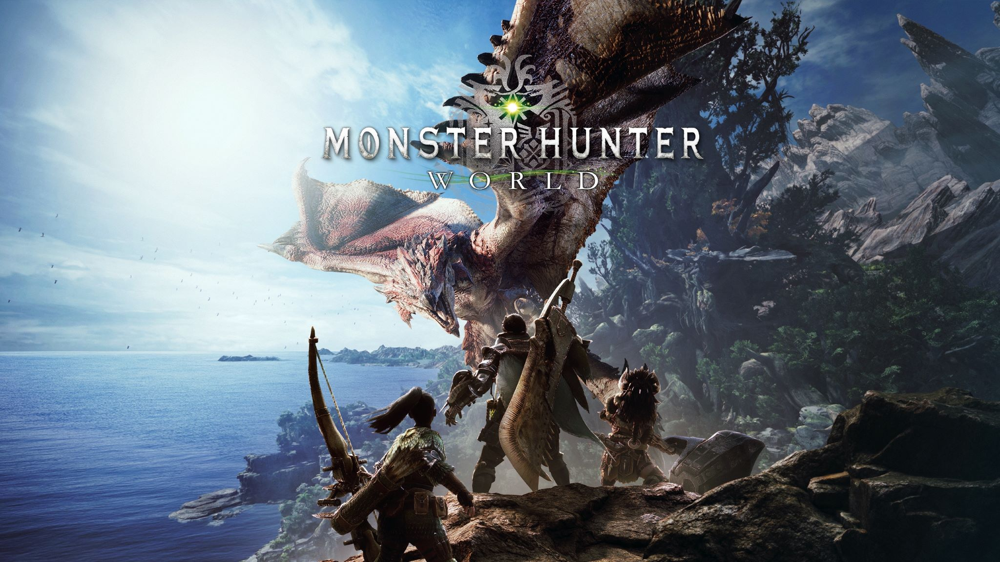
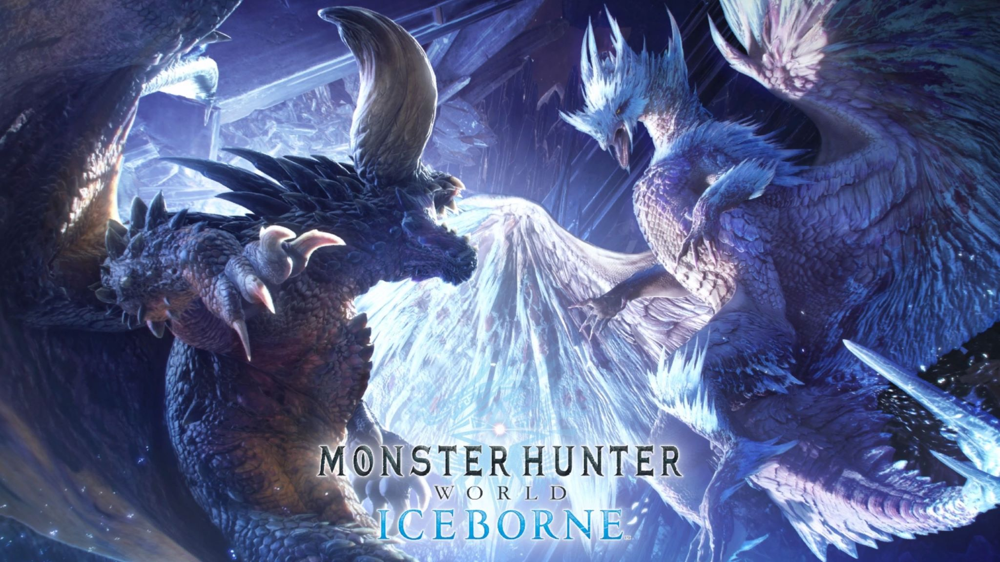
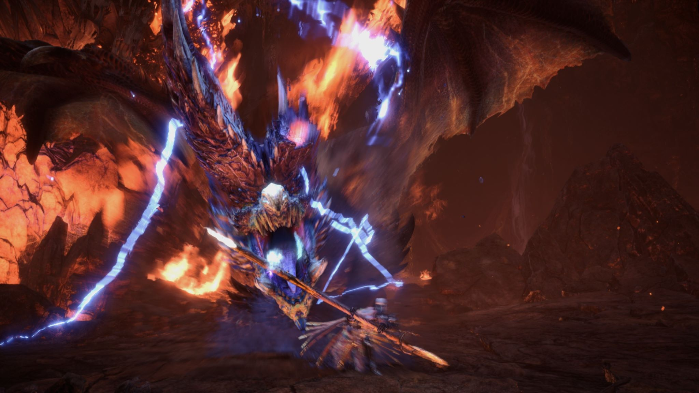

结业报告
操 虫 棍 基 础 指 南
本指南将带你了解《怪物猎人世界：冰原》中操虫棍的基本信息与基本技巧，作为你成为虫棍仔路上的基础
本人并非操虫棍顶尖高手，只是作为本人最喜欢的武器，希望通过个人经验提供一些意见
贵物猎人
怪物猎人：世界
《怪物猎人：世界》是日本知名游戏公司CAPCOM采用MT Framework引擎开发制作的第三人称角色扮演类动作游戏，于2018年1月16日在PS4、XboxOne平台发售，2018年8月10日登陆PC端Steam平台，为《怪物猎人》系列作品之一。
在游戏中，玩家将化身成猎人， 接受任务狩猎生活栖息在各种环境中的怪物。利用狩猎怪物取得的材料，制作更强的武器和防具， 挑战更强大的怪物。

怪物猎人世界：冰原

《怪物猎人世界：冰原》是CAPCOM制作发行的动作角色扮演游戏《怪物猎人：世界》的拓展包，于2019年9月6日在PS4、Xbox平台发行，2020年1月10日登陆PC端Steam平台。
该拓展包讲述了新大陆怪物突发异变，调查团就此展开追踪并发现新地区而展开的故事。
在《怪物猎人世界：冰原》中，所有武器相比《怪物猎人：世界》均进行了改动，如增加新的招式等，本指南就将以《怪物猎人世界：冰原》中的操虫棍为基础，介绍操虫棍的基础知识。
操虫棍
基本介绍
操虫棍是怪物猎人系列作品中的一把轻武器，左手持棍，右手承载猎虫，拥有十四把武器中最强的机动能力，同时还能借助猎虫的精华强化进一步提高战斗能力。
设计理念
操虫棍摒弃了一发制敌的大招，换来了其拥有的最强的机动与缠斗能力，操虫棍不需要借助高台就能原地起跳，是唯一一把能够主动跳跃的武器，能够轻易躲避怪物的攻击，并且能够在空中连续发动攻击、骑乘怪物、击倒怪物、集中攻击，一气呵成。
特殊机制：猎虫
猎人可以命令猎虫向敌人发起攻击，攻击的同时留下粉尘，攻击粉尘会触发粉尘爆炸并带来一定的效果。
猎虫在命中怪物的不同部位后还能萃取对应的精华，召回猎虫即可获取精华强化，一定时间内加强自身的战斗能力。

操虫棍基础指南
基础信息
了解操虫棍的基本信息，从零开始了解这把武器及相关机制
进入指南
招式派生
介绍个人常用的操虫棍的基础招式派生及个人建议，作为实战的知识储备
进入指南
配装推荐
根据个人经验总结出的不同阶段的配装推荐，可作为参考
进入指南
音乐鉴赏
世界本体和冰原的音乐神中神，不得不品鉴
（这好像不是指南）
进入
指南
鉴赏